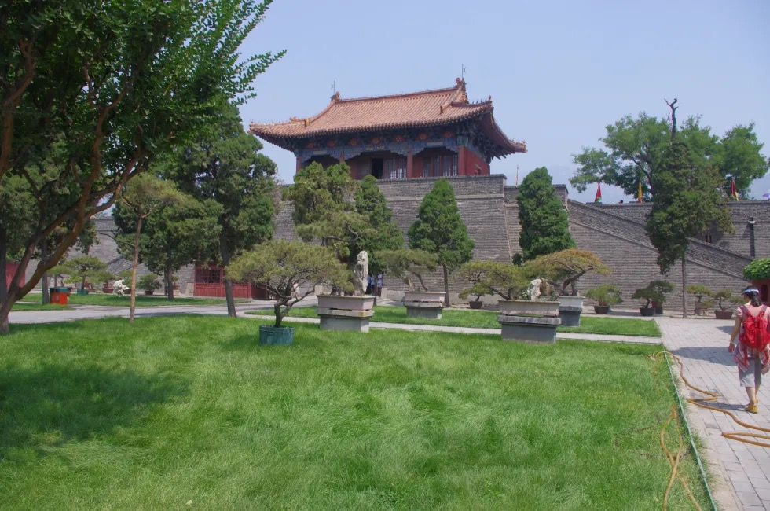

Spiritual prelude
Historical Landmarks — Dai Temple
The Dai Temple is Tai'an’s ceremonial threshold to Mount Tai—where emperors once prepared offerings and processions before the climb. Its gate towers and broad stone courtyards still frame the same axis toward the peak, a UNESCO World Heritage landscape of rite, cypress shade, and layered roofs.
Before the climb
Courtyard to peak
Move from the outer atmosphere of market streets into sequences of walls and gates; each threshold narrows the world until stone paving, tablet halls, and ancient trees read as a single procession toward the mountain. Allow two to three hours for a thoughtful loop—longer if you linger over inscriptions and roof detail.

-
Imperial narrative
For centuries, the temple complex anchored state ritual: sacrifices, memorial steles, and the symbolic alignment of earthly power with the sacred mountain. Walking the central axis today, you still cross the same logical stages—outer dignity, inner stillness—mirroring the mental shift from city to ascent.
-
Architecture & motif
The photograph highlights what visitors notice first: monumental gateways, upturned eaves weighted with glaze and ornament, and vast paving that sets human scale against timber and stone. Cypress avenues and side halls hold steles and smaller shrines—details worth slowing down for: bracket sets, carved panels, and the rhythm of shadow across the yard.
-
Visitor field notes
Check current opening hours and ticket policy before you go; guided tours in Mandarin are common, with English materials sometimes at the entrance. Flash photography may be restricted in hall interiors—respect active worship spaces, keep voices low, and save wide shots for courtyards and under the trees. After Dai Temple, many travellers continue toward the mountain buses with a clearer sense of why the climb begins here.